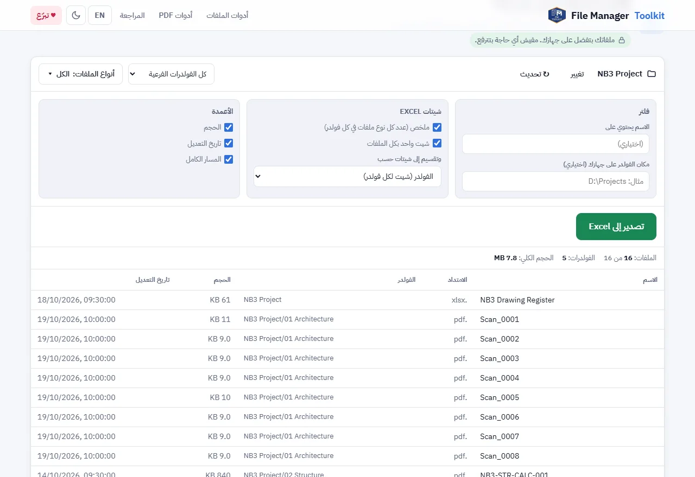

طريقة نسخ أسماء كل الملفات في مجلد ومجلداته الفرعية إلى Excel
انقل اسم كل ملف في المجلد (الفولدر) وكل المجلدات التي بداخله إلى ملف Excel، مع المجلد والنوع والحجم والتاريخ، في ضغطات قليلة وبدون ماكرو أو Power Query أو أوامر CMD.
ملفاتك بتفضل على جهازك. مفيش أي حاجة بتترفع.
الإجابة باختصار
افتح أداة قائمة الملفات إلى Excel، واضغط "اختر فولدر" واختر المجلد الرئيسي. تظهر كل الملفات فيه وفي كل مجلداته الفرعية. اختر الشيتات والأعمدة التي تريدها واضغط "تصدير إلى Excel".
الطرق المعتادة، ولماذا هي بطيئة
الإجابات الشائعة لهذا السؤال هي أمر dir /b في موجه الأوامر، أو "نسخ كمسار" في مستكشف Windows، أو Power Query في Excel، أو ماكرو VBA. كلها تعمل، لكن كل واحدة تحتاج تنظيفاً بعدها: مسارات تُقسم إلى أعمدة، ومجلدات تُفصل عن الملفات، وأحجام بالبايت، وماكرو قد تمنعه شركتك.
عندما تحتاج قائمة ملفات لتسليم مشروع أو مراجعة أو سجل مستندات، تريد النتيجة جاهزة: صف لكل ملف، والمجلد في عمود مستقل، والحجم والتاريخ بشكل مقروء، وربما شيت لكل مجلد.
خطوة بخطوة
اختر المجلد الرئيسي
افتح الأداة واضغط "اختر فولدر". اختر المجلد الأعلى للمشروع. تقرأه الأداة وتقرأ كل مجلد بداخله مهما كان عمقه.
اختر المجلدات وأنواع الملفات
اترك "كل الفولدرات الفرعية"، أو اختر "الفولدر الحالي فقط" أو "اختيار فولدرات فرعية". استخدم "أنواع الملفات" لإبقاء أنواع معينة فقط مثل PDF و DWG، و"الاسم يحتوي على" للفلترة بكلمة.
اختر الشيتات
تحت "شيتات Excel"، فعّل "ملخص" لعدد كل نوع ملفات في كل مجلد، و"شيت واحد بكل الملفات" للقائمة الكاملة. ويمكنك أيضاً تقسيم القائمة إلى شيت لكل مجلد أو لكل نوع ملف.
اختر الأعمدة
فعّل "الحجم" و"تاريخ التعديل" و"المسار الكامل" حسب حاجتك. واكتب مكان المجلد على جهازك، مثل D:\Projects، إذا أردت مسارات كاملة يمكنك لصقها في مستكشف Windows.
تصدير إلى Excel
اضغط "تصدير إلى Excel". يُحفظ الملف في التنزيلات مع تثبيت صف العناوين، جاهزاً للفلترة والترتيب.

فيم تستخدم القائمة
- سجل مستندات أو قائمة إرسال لتسليم مشروع.
- التأكد أن مجلد كل تخصص فيه الملفات المطلوبة، باستخدام شيت الملخص.
- إيجاد الملفات القديمة أو الكبيرة جداً قبل أرشفة المشروع.
- التحضير لإعادة تسمية جماعية: انسخ القائمة، واكتب الأسماء الجديدة بجانبها، ثم استخدم أداة إعادة تسمية الملفات.
أي متصفح تستخدم
Chrome و Edge على الكمبيوتر يقرآن المجلد مباشرة. Firefox و Safari يعملان أيضاً: يطلبان منك تأكيد "رفع" المجلد في نافذة المتصفح، لكن الملفات تُقرأ على جهازك فقط ولا تُرسل لأي مكان. تُقرأ أسماء الملفات وبياناتها فقط وليس محتواها، لذلك حتى المجلدات الضخمة سريعة.
صدّر قائمة ملفاتك الآن
مجاني، يعمل داخل متصفحك، وملفاتك لا تخرج من جهازك أبداً.
افتح أداة قائمة الملفات إلى Excel ←أسئلة شائعة
كيف أنسخ أسماء كل الملفات من مجلد إلى Excel؟
اختر المجلد في أداة قائمة الملفات إلى Excel واضغط "تصدير إلى Excel". كل اسم ملف يوضع في صف، والامتداد والمجلد في أعمدة منفصلة.
هل تشمل الملفات في المجلدات الفرعية؟
نعم. كل المجلدات الفرعية مشمولة تلقائياً. ويمكنك اختيار المجلد الحالي فقط أو مجلدات فرعية معينة.
هل أحتاج VBA أو ماكرو أو Power Query؟
لا. لا يُثبت أي شيء في Excel. الأداة تنشئ ملف .xlsx عادياً.
هل تُرفع ملفاتي؟
لا. تُقرأ الأسماء والأحجام والتواريخ فقط، بواسطة متصفحك على جهازك. لا يُرسل أي شيء لأي سيرفر.
كم ملفاً يمكن أن تعرض؟
عشرات الآلاف. المجلدات الكبيرة تأخذ بضع ثوانٍ للقراءة.